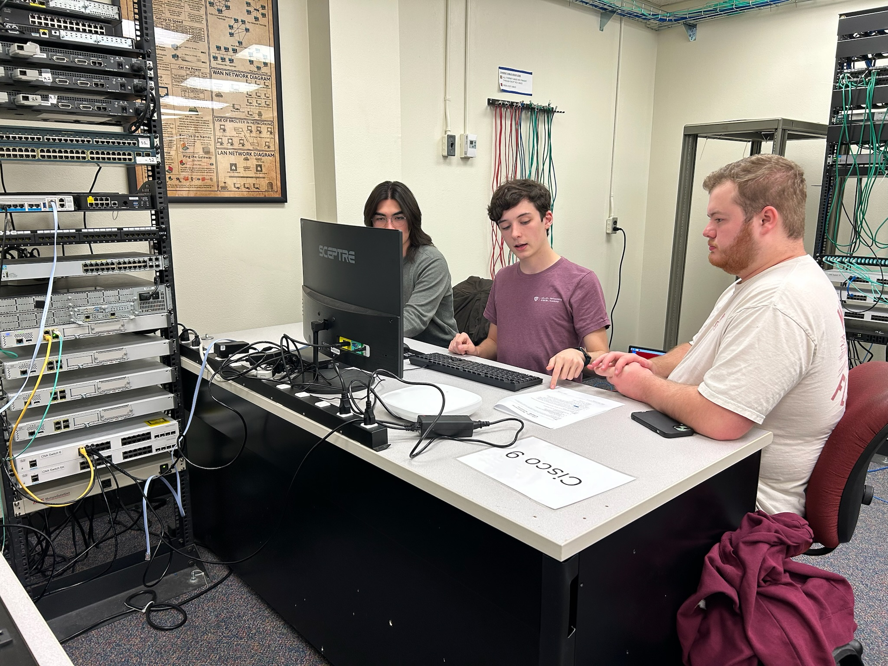

The main way I give back to my community is through my involvement in the Texas A&M Cybersecurity Club. As Vice President, I work to ensure the club runs smoothly and that as many students are informed about the opportunities we provide as possible. As Cisco Academy Lead, I share my passion for networking with dozens of students each semester, oftentimes having the opportunity to introduce them to networking entirely. I also help students earn their CCNA, setting them up for a successful technical career. I am truly grateful for this opportunity I have to help my fellow Aggies.
